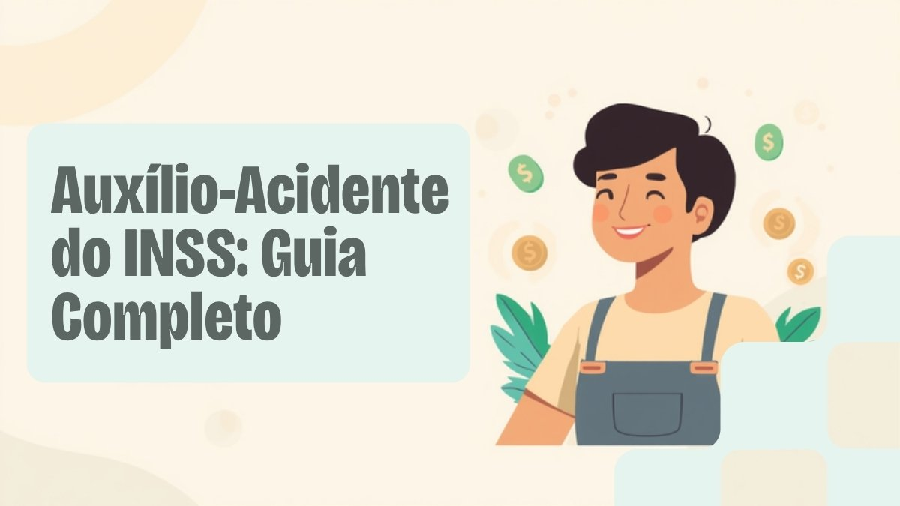

Auxílio-acidente do INSS: quem tem direito, quanto você recebe e como calcular em 2026

Sofreu um acidente — de trabalho ou não — e ficou com uma sequela que reduziu sua capacidade de trabalhar, mesmo que você continue empregado? Existe um benefício do INSS pouco conhecido para essa situação específica, diferente do auxílio-doença e da aposentadoria por invalidez: o auxílio-acidente. Muita gente nunca ouviu falar dele e deixa de pedir um dinheiro a que tem direito.
Neste guia você entende o que é o auxílio-acidente, quem pode receber, como o INSS calcula o valor, o que muda em relação a outros benefícios parecidos e o novo procedimento de análise que passou a valer em 2026.
O que é o auxílio-acidente
Segundo o INSS, o auxílio-acidente é um benefício de natureza indenizatória, pago quando, depois de um acidente de qualquer natureza — não precisa ser necessariamente um acidente de trabalho —, o segurado fica com uma sequela permanente que reduz sua capacidade para o trabalho que exercia habitualmente. A palavra-chave é "indenização": o benefício não substitui o seu salário, é um valor extra pago junto com ele, como uma compensação pela limitação que passou a carregar.
Isso o diferencia de outros benefícios por incapacidade: você pode continuar trabalhando normalmente e, ainda assim, receber o auxílio-acidente todo mês, sem prazo de fim previsto — a lei chama esse pagamento de mensal e vitalício, encerrado apenas quando você se aposenta ou falece.
Quem tem direito
Nem todo tipo de segurado do INSS pode receber o auxílio-acidente. A lista de categorias elegíveis é mais restrita do que a do auxílio-doença (hoje chamado oficialmente de auxílio por incapacidade temporária):
| Categoria | Tem direito ao auxílio-acidente? |
|---|---|
| Empregado urbano ou rural (CLT) | Sim |
| Trabalhador avulso | Sim |
| Segurado especial (trabalhador rural em regime de economia familiar) | Sim |
| Empregado doméstico | Sim, para acidentes ocorridos a partir de 1º de junho de 2015 |
| Contribuinte individual / autônomo | Não |
| Segurado facultativo | Não |
| MEI (como contribuinte individual) | Não |
Essa é a principal armadilha do benefício: quem é autônomo, MEI ou contribui como facultativo pode ter direito a auxílio-doença e à aposentadoria por incapacidade, mas não tem direito ao auxílio-acidente, mesmo com uma sequela permanente comprovada. A regra é clara nesse ponto e não costuma ter exceção.
Além de estar em uma categoria elegível, é preciso ter a qualidade de segurado no momento do acidente — ou seja, estar contribuindo ou dentro do período de graça. Um ponto que surpreende bastante gente: não existe carência para o auxílio-acidente. Não importa se o acidente aconteceu no primeiro mês de trabalho — se a sequela permanente for reconhecida pela perícia, o direito existe.
Regra prática: o auxílio-acidente só cabe para quem tem carteira assinada, é trabalhador avulso, doméstico ou rural. Se você é autônomo, MEI ou contribui como facultativo, esse benefício específico não se aplica ao seu caso — mesmo com sequela permanente.
Quanto você recebe: como é feito o cálculo
O valor do auxílio-acidente corresponde a 50% do salário de benefício que serviria de base para o cálculo do auxílio por incapacidade temporária (antigo auxílio-doença) relativo àquele acidente. Na prática, o INSS apura a média das suas contribuições (com a metodologia vigente desde a reforma da Previdência) e aplica o percentual de 50% sobre esse valor.
Como todo benefício previdenciário, ele respeita os limites legais:
- Não pode ser inferior a um salário mínimo — em 2026, o piso equivale a R$ 810,50 (metade do salário mínimo de R$ 1.621,00);
- Não pode ultrapassar o teto do INSS — em 2026, R$ 8.475,55.
Exemplo prático: um trabalhador com salário de benefício de R$ 2.400 sofre um acidente de trajeto e fica com uma sequela permanente no braço que reduz sua capacidade para a função. O auxílio-acidente equivale a 50% de R$ 2.400 = R$ 1.200 por mês, pagos junto com o salário normal, enquanto ele continuar trabalhando — até o dia em que se aposentar.
Auxílio-acidente x auxílio-doença x aposentadoria por incapacidade: qual a diferença
É comum confundir os três benefícios, mas eles atendem a situações diferentes:
| Benefício | Quando é pago | Você pode trabalhar? |
|---|---|---|
| Auxílio-doença (incapacidade temporária) | Incapacidade temporária, por doença ou acidente, com mais de 15 dias de afastamento | Não, enquanto durar o afastamento |
| Aposentadoria por incapacidade permanente | Incapacidade total e definitiva para qualquer trabalho | Não |
| Auxílio-acidente | Sequela permanente de acidente que reduz (mas não impede) a capacidade de trabalho | Sim, o benefício é pago junto com o salário |
Na sequência mais comum, o trabalhador primeiro recebe o auxílio por incapacidade temporária durante o afastamento, passa por perícia ao voltar, e, se ficou uma sequela permanente que reduz sua capacidade (mesmo com alta médica para o trabalho), passa a receber o auxílio-acidente a partir do dia seguinte ao fim daquele afastamento — independente de qualquer remuneração que esteja recebendo.
É possível acumular com outros benefícios?
Sim e não, dependendo do caso. Como é uma indenização e não uma substituição de renda, o auxílio-acidente pode ser recebido junto com o salário normal de quem voltou a trabalhar. Também pode, em regra, ser somado a outro auxílio-acidente decorrente de um segundo acidente distinto.
O que a lei veda expressamente é a acumulação do auxílio-acidente com qualquer aposentadoria. Isso significa que, no dia anterior ao início da sua aposentadoria pelo INSS, o pagamento do auxílio-acidente é automaticamente encerrado — ele não vira um complemento da aposentadoria, mesmo que o valor da sequela nunca tenha desaparecido.
O que mudou em 2026: análise documental antes da perícia
Desde março de 2026, o pedido de auxílio-acidente passou a seguir um procedimento novo, definido pela Portaria Conjunta MPS/INSS nº 15/2026. Antes de agendar a perícia médica presencial, a Perícia Médica Federal faz uma análise documental prévia para verificar:
- Se há comprovação de que o acidente de fato ocorreu;
- Se existe documentação médica que evidencie a sequela e sua relação com o acidente;
- Se já existe (ou existiu) um benefício por incapacidade relacionado ao mesmo caso.
Se a documentação enviada já for suficiente, o INSS agenda a perícia presencial normalmente. Mas se faltarem elementos essenciais, o pedido pode ser indeferido administrativamente sem perícia — o que torna ainda mais importante caprichar nos documentos já na primeira tentativa. Nesse caso, cabe recurso administrativo, no prazo e na forma previstos na legislação previdenciária.
Na prática, isso reforça uma recomendação que já valia antes: reúna laudos médicos detalhados, exames de imagem, boletim de ocorrência (quando aplicável) e qualquer documento que comprove o nexo entre o acidente e a sequela antes de dar entrada no pedido.
Como pedir o auxílio-acidente
- Acesse o aplicativo ou site do Meu INSS com login gov.br, ou ligue para a Central 135;
- Abra um "Novo Pedido" e procure por "Auxílio-Acidente";
- Anexe os documentos: identificação, CPF, laudos e exames que comprovem a sequela e sua ligação com o acidente, e, se o caso vier de um afastamento anterior, o número do benefício por incapacidade temporária que antecedeu o pedido;
- Acompanhe pelo próprio aplicativo se o pedido seguirá para análise documental, perícia presencial ou já foi decidido.
Se o pedido for aprovado com valor retroativo relevante, vale considerar destinar parte desse dinheiro para montar ou reforçar uma reserva de emergência — afinal, o auxílio-acidente existe justamente para compensar uma limitação que pode pesar no orçamento no futuro.
Perguntas rápidas
Acidente doméstico dá direito ao auxílio-acidente?
Sim. A lei fala em "acidente de qualquer natureza" — não precisa ser no trajeto para o trabalho nem durante o expediente. O que importa é que a sequela permanente reduza sua capacidade para a atividade que você exercia.
Quem já recebe auxílio-doença pode pedir o auxílio-acidente ao mesmo tempo?
Não. Enquanto durar a incapacidade temporária (e o respectivo auxílio-doença), você não recebe o auxílio-acidente. Ele só começa depois que a incapacidade temporária termina e a perícia reconhece a sequela permanente.
MEI que também é empregado CLT tem direito?
Depende da categoria em que o acidente é enquadrado. Como empregado CLT, ele tem direito normalmente; a contribuição adicional como MEI (contribuinte individual) não gera direito ao auxílio-acidente por si só, mas também não retira o direito que ele já tem pelo vínculo CLT.
Preciso de advogado para pedir?
Não é obrigatório. O pedido pode ser feito diretamente pelo Meu INSS. Um advogado especializado em direito previdenciário costuma ajudar principalmente quando o pedido é negado e é preciso recorrer ou reunir provas mais robustas do nexo entre o acidente e a sequela.